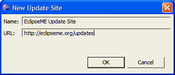

|
J2ME Development using Eclipse
"From zero to mobile in minutes" |

Installing EclipseME itself
This document provides instructions on how to install or upgrade the EclipseME plugin/feature set. Before you follow the steps below, please make sure you have followed the prerequisite steps here. In addition, once you have finished the installation itself, you will need to configure EclipseME's settings (see here) as well as some Eclipse settings.
- Decide on your approach
- Installing via the EclipseME Update site
- Installing via a downloaded archive site
- Configuring Preprocessor Support
1. Decide on your approach
Beginning with version 0.5.5, EclipseME is provided as an Eclipse "archive site." With version 0.5.0 and earlier, one simply unzipped the distribution file into the Eclipse installation directory or plugin directory. This is no longer the installation procedure. Please follow the instructions below instead.
If you are updating EclipseME, you should also use the procedure below. New installations and updates follow the same series of steps.
There are two basic ways of installing or updating EclipseME:
- You can simply to use Eclipse's built-in updates feature to directly install or update via EclipseME's update site.
- You can download an archive site file manually, and then install from it.
2. Installing via the EclipseME Update site
-
From the Eclipse Help menu, select Software Updates and then Find and install...
-
You will be presented with the following dialog:

Select the Search for new features to install radio button.
Press Next. -
You will next be presented with the following dialog:
Press the New Remote Site... button. -
In the New Update Site dialog that appears, enter a name for the update site and the URL http://www.eclipseme.org/updates/ and press Open.
 -
The update site will now be listed in the Install dialog.
Ensure that there is a check next to the EclipseME update site, then press Next. -
You will next be presented with the following dialog:
Ensure that there is a check next to EclipseME. Other available features can be installed by checking them as well. Press Next. -
The installation process will next display the license agreement for EclipseME.
Select I accept the terms of the license agreements and press Next. -
The next dialog that appears displays the possible locations into which you can install EclipseME.
In many cases, the only site that will be listed will be the main Eclipse installation directory. If you have other plugins or features installed, however, you may see additional sites.Although you may install EclipseME elsewhere, we recommend that you install it in your main Eclipse installation directory.
Once you have selected a site, press Finish.
-
At present the EclipseME package is not digitally signed. (Maintaining the keys required to digitally sign JAR files costs $400+/year. If anyone is interested in funding EclipseME to this extent, we'll be happy to sign the JAR files.) As a result, the following warning dialog will be displayed:
Presuming that you are certain that you obtained the EclipseME distribution file from a reputable source (such as directly downloading it yourself from SourceForge.net), it should be safe to trust the installation package.If you choose to continue, press the Install button.
-
At this point, Eclipse will begin to install EclipseME from the site archive file. When the installation is complete, you will see one of the following two dialogs:
New installations Updates Even though the dialog shown during new installations suggests that it may be possible to continue without restarting, you should definitely restart Eclipse at this point.
Once Eclipse restarts, the installation procedure is complete.
In the vast majority of the cases, the installation procedure above will properly handle updating a previous version of EclipseME.
Under some rare circumstances, even after Eclipse restarts, EclipseME will not end up properly "registered" inside Eclipse. This can generally be corrected by closing Eclipse and then restarting Eclipse adding the -clean parameter to the other parameters you normally use. Using the -clean option forces Eclipse to rescan and update all its plugin information.
If the plug-in is properly installed, there will be a J2ME entry in the Window / Preferences dialog.
3. Installing via a downloaded archive site
The process of installing EclipseME via a downloaded archive file is very similar to that of installing it via the EclipseME update site.
-
Download the latest archive site from the EclipseME downloads page.
-
From the Eclipse Help menu, select Software Updates and then Find and install...
-
You will be presented with the following dialog:
Select the Search for new features to install radio button. You should select this option even if you are updating EclipseME.
Press Next. -
You will next be presented with the following dialog:
Press the New Archived Site... button. -
In the Select Local Site Archive dialog that appears, select the distribution ZIP file and press Open.
-
The site archive file will now be listed in the Install dialog.
Ensure that there is a check next to the distribution file, then press Next. -
You will next be presented with the following dialog:
Ensure that there is a check next to EclipseME. Other available features can be installed by checking them as well. Press Next. -
The installation process will next display the license agreement for EclipseME.
Select I accept the terms of the license agreements and press Next. -
The next dialog that appears displays the possible locations into which you can install EclipseME.
In many cases, the only site that will be listed will be the main Eclipse installation directory. If you have other plugins or features installed, however, you may see additional sites.Although you may install EclipseME elsewhere, we recommend that you install it in your main Eclipse installation directory.
Once you have selected a site, press Finish.
-
At present the EclipseME package is not digitally signed. (Maintaining the keys required to digitally sign JAR files costs $400+/year. If anyone is interested in funding EclipseME to this extent, we'll be happy to sign the JAR files.) As a result, the following warning dialog will be displayed:
Presuming that you are certain that you obtained the EclipseME distribution file from a reputable source (such as directly downloading it yourself from SourceForge.net), it should be safe to trust the installation package.If you choose to continue, press the Install button.
-
At this point, Eclipse will begin to install EclipseME from the site archive file. When the installation is complete, you will see one of the following two dialogs:
New installations Updates Even though the dialog shown during new installations suggests that it may be possible to continue without restarting, you should definitely restart Eclipse at this point.
Once Eclipse restarts, the installation procedure is complete.
In the vast majority of the cases, the installation procedure above will properly handle updating a previous version of EclipseME.
Under some rare circumstances, even after Eclipse restarts, EclipseME will not end up properly "registered" inside Eclipse. This can generally be corrected by closing Eclipse and then restarting Eclipse adding the -clean parameter to the other parameters you normally use. Using the -clean option forces Eclipse to rescan and update all its plugin information.
If the plug-in is properly installed, there will be a J2ME entry in the Window / Preferences dialog.
4. Configuring Preprocessor Support
Due to limitations in the extensibility of the Eclipse Java Compiler (see Bug 116143 for further information), it is necessary for EclipseME to hook into the Eclipse platform at a lower level in order to provide preprocessor support. If you would like to take advantage of EclipseME's support for preprocessing, a few extra changes need to be made to your Eclipse installation.
- When installing the EclipseME feature, it is imperative that it be installed into the same directory structure as your base Eclipse installation. For instance, if your base Eclipse installation (not your workspace) is installed to c:\software\eclipse, you will need to make sure that you install EclipseME into c:\software\eclipse. When the installation has completed, the eclipseme.core.hooks_[version].jar file must be located in the same directory as the org.eclipse.org_[version].jar.
-
The Eclipse configuration file must be altered to reference the EclipseME framework hooks bundle.
- Locate the file config.ini. This file is located in the <eclipse install>/configuration directory.
- Edit the config.ini with your favorite text editor.
-
Add the property definition
osgi.framework.extensions=eclipseme.core.hooks
to the configuration file.
If the property already exists, append",eclipseme.core.hooks"to the end of the current property definition.
It is very important that the line be added before the end-of-file marker. Failure to properly place the new line before the end-of-file marker could cause your Eclipse workbench to fail to start. - Save the configuration file.
- Restart Eclipse.
You will be warned if you have projects that are configured for preprocessing, but the necessary
configuration changes have not been made. In this case, a warning will be written to the Eclipse
workspace log file with text similar to
"Preprocessor invoked, but hook is not installed.
Consult the installation instructions for EclipseME."
For more information on viewing the workspace log file see the troubleshooting
section of the EclipseME documentation.
Next Steps
Once you have completed the steps above, you are ready to configure EclipseME and Eclipse. Click here for instructions on how to to that.